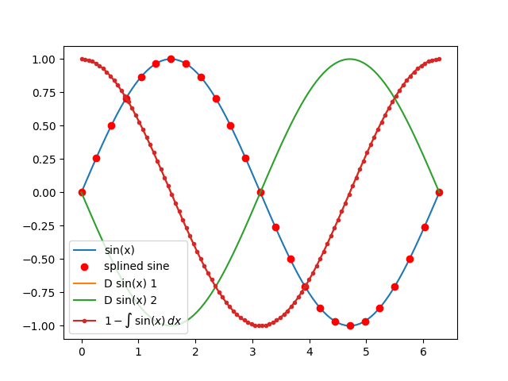

This example shows how to use the Function1D object to analyze and plot results.
import numpy as np
import matplotlib.pyplot as plt
from abipy.abilab import Function1D
# Build mesh [0, 2pi] with 100 points.
mesh = np.linspace(0, 2*np.pi, num=100)
# Compute sine function.
sine = Function1D.from_func(np.sin, mesh)
# Call matplotlib to plot data.
fig = plt.figure()
ax = fig.add_subplot(1, 1, 1)
# Plot sine.
sine.plot_ax(ax, label="sin(x)")
# Spline sine on the coarse mesh sx, and plot the data.
sx = np.linspace(0, 2*np.pi, num=25)
splsine = sine.spline(sx)
plt.plot(sx, splsine, "ro", label="splined sine")
# Compute the 1-st and 2-nd order derivatives
# with finite differences (5-point stencil).
for order in [1,2]:
der = sine.finite_diff(order=order)
der.plot_ax(ax, label="D sin(x) %d" % order)
# Integrate the sine function and plot the results.
(1 - sine.integral()).plot_ax(ax, marker=".", label=r"$1 - \int\,\sin(x)\,dx$")
plt.legend(loc="best")
plt.show()
Total running time of the script: ( 0 minutes 0.045 seconds)